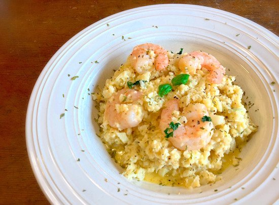

RISOTO DE CAMARÃO
Para impressionar todos seus convidados.

INGREDIENTES
- 3 xícaras de arroz arbóreo para risoto
- 2 colheres de azeite
- 1 colher de manteiga
- 2 dentes de alho picados
- 1 limão
- 400 g de camarão
- sal e pimenta a gosto
- salsinha ou coentro e cebolinha para temperar
- Vinho branco (opcional)
MODO DE PREPARO
- Adicione em uma panela, o azeite, a manteiga, o alho e o arroz.
- Mexa até que o arroz comece a ficar transparente para soltar o amido (cuidado para não queimar)
- Quando terminar, jogue o vinho e deixe evaporar, mexendo um pouco. (opcional)
- Enquanto isso, pegue os camarões, esprema o limão, coloque um pouco de sal e deixe descansar por 10
a 15
minutos.
- Após este tempo, apenas retire a água que se formou.
- Coloque o caldo de camarão na água fervente e adicione a água até cobrir o arroz./li>
- O arroz, no final, deve ficar sem líquido e cremoso.
- Assim que chegar no ponto, adicione o requeijão, o cheiro-verde e o camarão.
- Desligue o fogo e mexa bem.
- Tampe por 5 minutos e sirva.
- BOM APETITE!